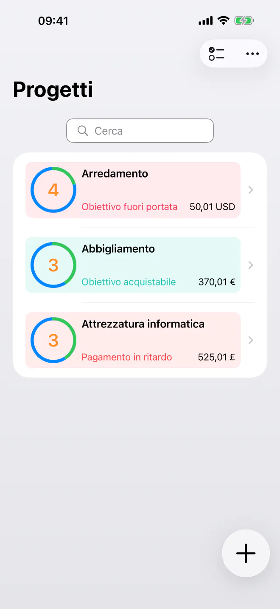
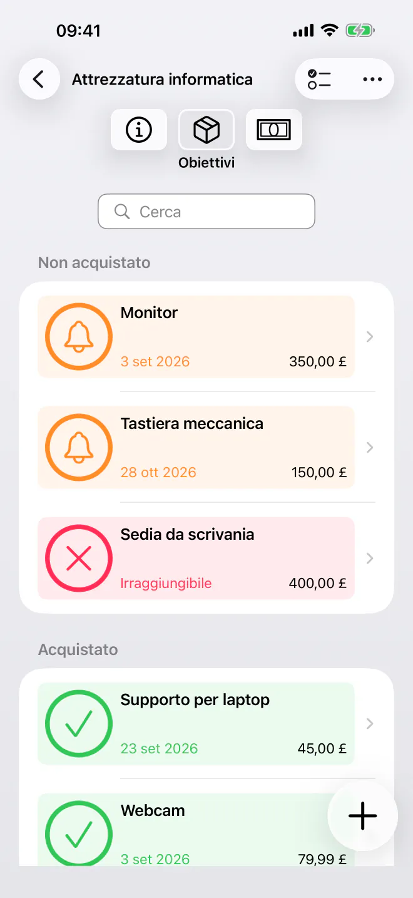
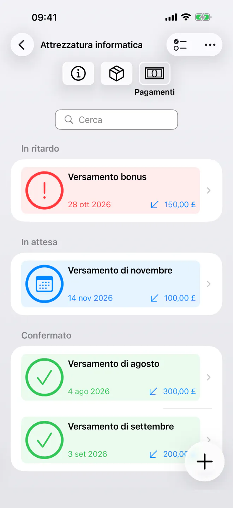
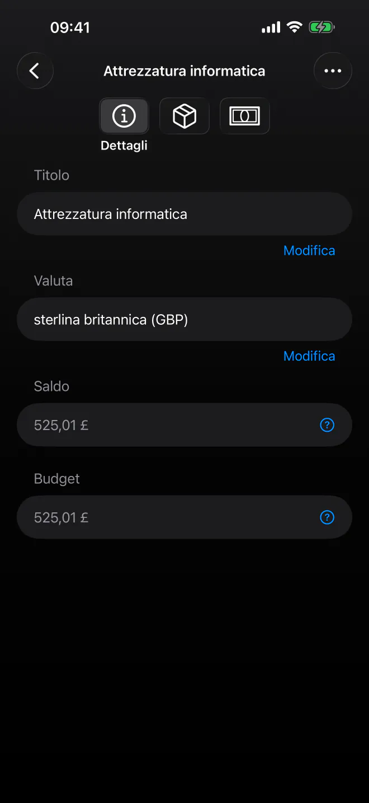

Scopri esattamente quando puoi acquistare
Dai la priorità ai tuoi obiettivi di risparmio e scopri quando puoi permetterti ogni acquisto. Pianificazione semplice e privata a cronologia automatica. Senza account.


Smetti di tirare a indovinare quando potrai finalmente comprare la prossima cosa della tua lista. BudgetBear è un’app semplice e privata che trasforma i tuoi obiettivi in una cronologia di acquisti chiara. Aggiungi i tuoi obiettivi, stabilisci le priorità e pianifica i tuoi versamenti, tutto in un’unica interfaccia tranquilla e ordinata che rispetta la tua privacy.
Pronto a iniziare a pianificare i tuoi acquisti? Scarica BudgetBear oggi stesso.
Perché scegliere BudgetBear
- 100% privato e sotto il tuo controllo — I tuoi dati finanziari restano solo sul tuo dispositivo. Nessun account dedicato, nessun server di terze parti e nessuna registrazione nel cloud, mai.
- Minimalista e mirata — Un’interfaccia veloce e facile da usare, concentrata su ciò che serve. Niente disordine né complessità inutile.
- Scopri esattamente quando puoi acquistare — BudgetBear calcola la data più vicina in cui puoi permetterti ogni obiettivo, così non devi più tirare a indovinare.
- Pensata attorno alle priorità — Combina le tue priorità con i pagamenti programmati per trasformare il tuo piano di risparmio in una data di acquisto realistica per ogni obiettivo.
Trasforma le priorità in una data di acquisto
Prendi il pieno controllo delle tue spese a lungo termine e dei tuoi obiettivi di risparmio con un sistema pensato per la chiarezza.
Liste dei desideri per priorità
Aggiungi articoli target (obiettivi) con prezzi stimati e trascinali nell’ordine esatto che preferisci.
Calcolo dinamico della cronologia
Guarda le tue date di acquisto aggiornarsi all’istante quando modifichi i prezzi, aggiungi versamenti o cambi l’ordine degli obiettivi.
Flussi di denaro flessibili
Aggiungi versamenti una tantum per rifornire i budget oppure registra prelievi se decidi di spendere i soldi altrove.
Pagamenti programmati
Crea piani ricorrenti di versamenti o prelievi con una data di fine (ad es. ogni 2° martedì o nel giorno di paga) affinché la tua cronologia resti automatizzata.

Funzioni principali per i tuoi obiettivi di risparmio
- Progetti di risparmio per priorità — Raggruppa gli obiettivi correlati in progetti dedicati a viaggi, elettronica, miglioramenti della casa o riserve di emergenza.
- Accantonamento intelligente — Il denaro viene indirizzato automaticamente al tuo obiettivo con la priorità più alta finché non è completamente finanziato, poi passa al successivo.
- Semplice e minimalista — Un’interfaccia pulita e senza distrazioni, pensata per un inserimento rapido, senza fronzoli né menu complicati.
- Ripetizioni con data di fine — Imposta date di inizio e di fine e intervalli per i contributi periodici senza regole complicate.
Usi versatili per i tuoi risparmi
Dai fondi dedicati agli acquisti importanti, BudgetBear si adatta ai tuoi obiettivi.
Fondi dedicati
Metti da parte denaro per spese future già note, come le polizze assicurative, gli acquisti delle feste o la manutenzione dell’auto.
Liste dei desideri per priorità
Organizza ciò che vuoi acquistare dopo e scopri quanto un nuovo versamento avvicina la tua data di acquisto.
Acquisti importanti
Suddividi i grandi acquisti in contributi periodici gestibili e guarda la tua cronologia accorciarsi nel tempo.

Privacy fin dalla progettazione
Nessun abbonamento. Nessun tracker. Nessun account dedicato.
BudgetBear conserva tutto in locale: nulla viene caricato, sincronizzato o condiviso con nessuno. I tuoi obiettivi e i dati del tuo budget non lasciano mai il tuo dispositivo.
Inizia gratis con fino a 3 progetti. Con un acquisto una tantum, Pro sblocca progetti illimitati, senza abbonamenti, mai.
Chiaro ed efficace
Che tu stia risparmiando per una vacanza o per un nuovo gadget, oppure stia costruendo un fondo di emergenza, BudgetBear è il tuo compagno affidabile per trasformare gli obiettivi di risparmio in date di acquisto concrete. Semplice, privato e senza bisogno di abbonamento.
I migliori strumenti di produttività si fanno da parte e ti lasciano concentrare. È questo BudgetBear: nessuna funzione superflua, nessuna interfaccia opprimente, solo una cronologia chiara per i tuoi obiettivi.